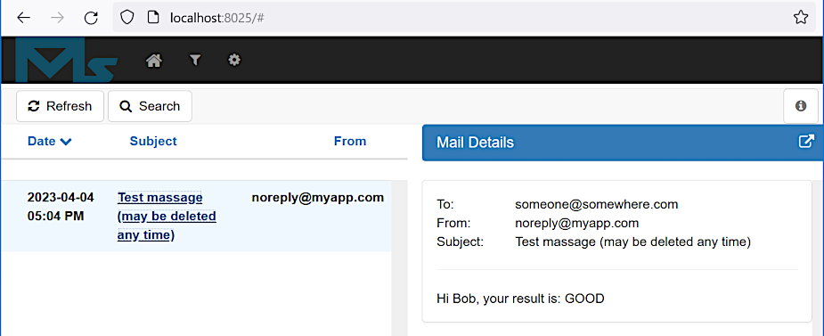

Service layer
Service layer
Service layer
Apr 4, 2023
Maven project web-app-spring-adv3 was copied to web-app-spring-adv4 to leave the previous
version untouched.
Git commit:
0939cb4dab0ac839cc742d39e5c933c6f6157105project web-app-spring-adv4 copied from project web-app-spring-adv3
Google mail service toughened up its security requirement so it's become too complex or impossible for testing mail sending while this application development.
Another solution was applied instead.
Add the following dependencies to the POM:
. . .
<dependency>
<groupId>javax.mail</groupId>
<artifactId>mail</artifactId>
<version>1.4.7</version>
</dependency>
<dependency>
<groupId>org.springframework</groupId>
<artifactId>spring-context-support</artifactId>
<version>${org.springframework.version}</version>
</dependency>
. . .To the EmailController
class add the email sending function:
. . .
@Autowired
private MyAppEmailService emailService;
. . .
@RequestMapping("/process-email")
public String processEmail(
@SessionAttribute("userInfoDto") UserInfoValidatedDto userInfoDto,
@ModelAttribute SendEmailDto sendEmailDto) {
emailService.sendEmail(userInfoDto.getName1(), sendEmailDto.getUserEmail(), "GOOD");
return "process-email-page";
}
. . .MyAppEmailService is an interface. The implementation is the MyAppEmailServiceImpl
class:
@Service
public class MyAppEmailServiceImpl implements MyAppEmailService {
@Autowired
private JavaMailSender mailSender;
@Override
public void sendEmail(String userName, String userEmail, String result) {
SimpleMailMessage newEmail = new SimpleMailMessage();
newEmail.setFrom("noreply@myapp.com");
newEmail.setTo(userEmail);
newEmail.setSubject("Test massage (may be deleted any time)");
newEmail.setText("Hi " + userName + ", your result is: " + result);
mailSender.send(newEmail);
}
}The autowired mailSender comes from the MyApplicationConfig
configuration class:
. . .
@Bean
public JavaMailSender mailSender() {
JavaMailSenderImpl mailSender = new JavaMailSenderImpl();
mailSender.setHost("localhost");
mailSender.setPort(2500);
mailSender.setUsername("someone@somewhere.com"); // looks like it's not used
mailSender.setPassword("someone"); // looks like it's not used
return mailSender;
}
. . .For testing need to go through the following steps:
mailslurper.exe (see above for
the setup instructions);*.war file to the %JETTY_BASE%/webapps directory;java -jar %JETTY_HOME%\start.jar, or see
here if debugging is required;If the message is sent successfully the following email must be visible in the email server UI:

Git commit:
4adb1d429d9bd13274e5576a984624785a0ecfa3sending email implemented
Git commit:
d980473dd58c9c0c4129a3e8a0531335166c5b46using properties file
Note
The @PropertySource annotation may be used several times to define several property sources.
Also the @PropertySources annotation may be used that allow specify severs @PropertySource
annotation inside.
Git commit:
a2a8a641bc4bfba150449cbf50665749b7bcdb4busing a logger